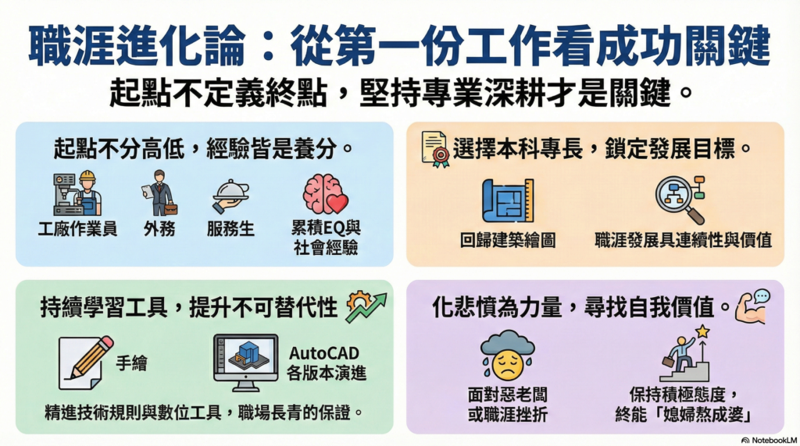

剛出社會，你是不是也迷惘過？
第一份工作不喜歡、薪水低、被罵、被現實打臉，甚至懷疑自己選錯路。
其實，多位職場前輩都走過彎路：做過苦工、被騙、換過好幾行。
關鍵不是順不順，而是你有沒有在累積實力。
回到專業、培養第二專長、經營人脈與EQ。
走過低谷，才會長出實力，機會只給準備好的人。
👇延伸閱讀👇
https://www.autocad-tw.com/t528-topic
#AutoCAD #職場新鮮人 #第一份工作 #堅持 #機會是給準備好的人
👇職涯建議簡報_下載👇